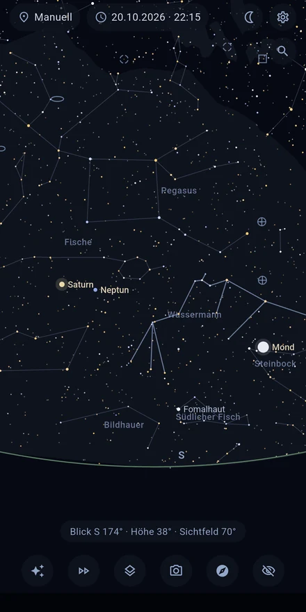
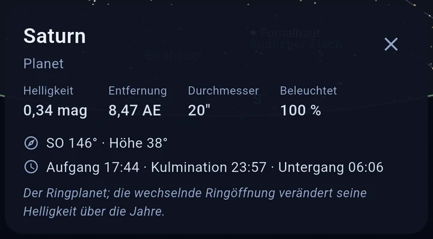
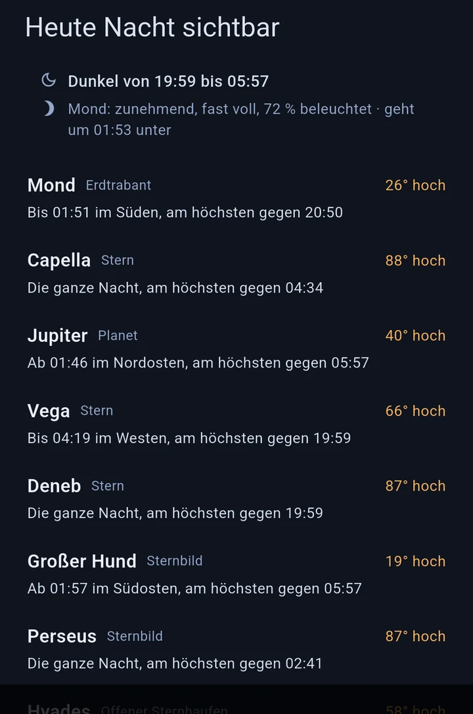
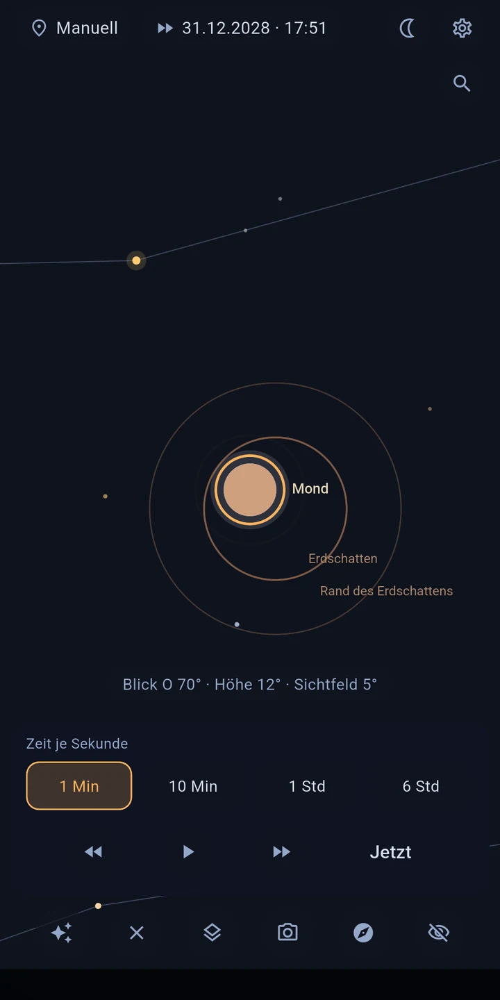

Astira – Sternenkarte
Sternbilder, Planeten und Mond erkennen — ohne Internet.
Richte dein Handy auf den Himmel — Astira zeigt dir live, was du gerade siehst: Sterne und Sternbilder, Planeten, den Mond und ferne Galaxien. Exakt berechnet für deinen Standort und den Moment, komplett ohne Internet.
DER HIMMEL FOLGT DEINER BEWEGUNG
Im Live-Modus steuert der Lagesensor die Ansicht: Gerät schwenken, und die Karte schwenkt mit — ruhig, flüssig und mit Kompass-Korrektur für das Erdmagnetfeld. Alternativ erkundest du den Himmel klassisch per Wischen und Zoomen.

ANTIPPEN UND VERSTEHEN
Tippe ein Objekt an und erfahre mehr, ohne die Ansicht zu verlassen: Eigenname und Katalogbezeichnung, Entfernung, Helligkeit, Spektralklasse und Temperatur, bei vielen hellen Sternen auch Radius und Masse — dazu Auf-, Kulminations- und Untergangszeit für deinen Standort.

FINDEN, WAS DU SUCHST
Suche Sterne, Planeten, Sternbilder und Deep-Sky-Objekte nach Namen oder Katalognummer — M 31, NGC 224 und Andromeda führen zum selben Objekt. Steht das Ziel außerhalb des Bildes, weist ein Pfeil den Weg samt Winkelabstand. Und wenn du noch gar nicht weißt, wonach du suchen sollst: „Heute Nacht sichtbar" nennt dir die lohnendsten Objekte der kommenden Nacht — in klaren Worten, mit Höhe und Beobachtungsfenster. Ein Einstieg in die Astronomie ohne Vorwissen, und beim ersten Start führt dich ein kurzer Rundgang durch die Bedienung.

WAS DU SIEHST
- Rund 8.900 Sterne — alle, die mit bloßem Auge sichtbar sind (bis Größenklasse 6,5)
- Sonne, Mond (mit Phase) und alle Planeten, inklusive Sichtbarkeits- und Dämmerungsstatus
- Alle 109 Messier-Objekte und weitere helle Galaxien, Nebel und Sternhaufen
- Ein- und ausblendbare Ebenen: Sternbilder, Milchstraße, Sonnensystem, Ekliptik, Planetenbahnen (±30 Tage)
- Standort per GPS oder manuell, Zeitpunkt frei wählbar — so siehst du auch den Himmel von morgen
DIE ZEIT IM ZEITRAFFER
Der Zeitraffer zeigt dir, wie die Sterne über den Himmel ziehen — vorwärts wie rückwärts. So siehst du ein Objekt untergehen, eine ganze Nacht durchlaufen oder den Mond durch seine Phasen wandern.
SONNEN- UND MONDFINSTERNISSE
Astira rechnet aus, welche Finsternisse von deinem Standort aus zu sehen sind — wann sie beginnen und wie viel bedeckt wird. Ein Tipp, und du verfolgst sie im Zeitraffer.

PRÄZISIONS-AUSRICHTUNG
Zeigt die Karte mal daneben (das passiert jedem Smartphone-Kompass): Stern anpeilen, antippen, „Hierher ausrichten" — fertig. So deckt sich die Karte mit deinem Himmel, statt dich raten zu lassen.
DER HIMMEL ÜBER DEINER UMGEBUNG
Schalte das Kamerabild zu, und die Sternkarte legt sich über das, was wirklich vor dir liegt: Horizont, Bäume, Dächer. Statt Karte und Wirklichkeit im Kopf zusammenzubringen, richtest du das Gerät einfach dorthin, wo du suchst. Das Bild wird nur angezeigt — nie aufgenommen, nie gespeichert, nie übertragen.
FÜRS BEOBACHTEN GEMACHT
- Nachtmodus in reinem Rot erhält deine Dunkeladaption
- Der Bildschirm bleibt an, solange du beobachtest
- Sterne mit realistischen Farben (nach Farbindex) und Helligkeits-Skalierung
- Einstellbares Helligkeitslimit, Entfernungen in Lichtjahren oder Parsec
KOMPLETT OFFLINE — UND PRIVAT
Astira braucht kein Internet: Alle Berechnungen laufen auf deinem Gerät. Die App hat keine Internet-Berechtigung, zeigt keine Werbung und enthält kein Tracking. Dein Standort wird nur lokal zur Berechnung der Himmelsansicht verwendet — perfekt auch für Beobachtungsplätze fernab jeder Stadt (und jedes Netzes).
GENAUIGKEIT
Die Positionsberechnung folgt den Standardverfahren der astronomischen Fachliteratur — Planetenpositionen weichen weniger als eine Bogenminute von der JPL-Referenz ab.
DATENQUELLEN
Sternkatalog: HYG-Datenbank (CC BY-SA) · Deep-Sky-Objekte: OpenNGC (CC BY-SA) · Details im Credits-Bildschirm der App.
Hinweis: Die Kompass-Genauigkeit von Smartphones liegt typisch bei ±5–10°. Mit der geführten Kalibrierung und der Stern-Ausrichtung identifizierst du trotzdem jedes Objekt sicher.